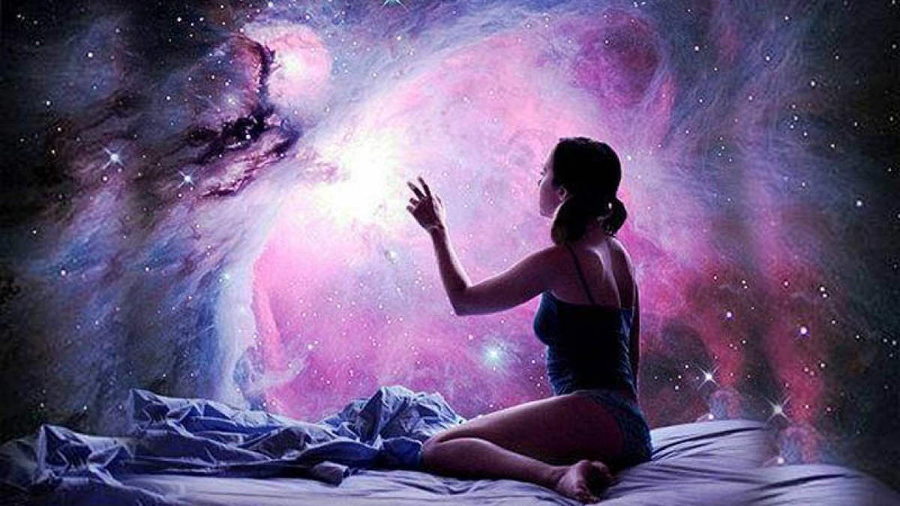

Тетрадь Смерти:
Перелом
Грань реальности
Это не просто сон — это игра на реакцию!

Выбери узел сна
1-й узел. Запретная память
2-й узел. Пороговые лица
3-й узел. Обратная сторона
4-й узел. Шепот предков
5-й узел. Вхождение в роль
6-й узел. Белая пустота
7-й узел. Зеркало тела
8-й узел. Механизм времени
9-й узел. Допрос чувствами
10-й узел. Мир без законов
Осознать узел
Открыть подсказки